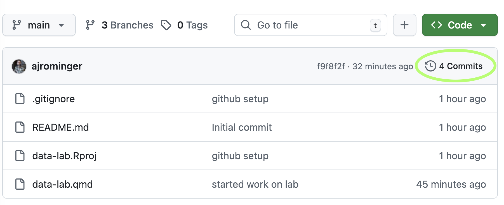
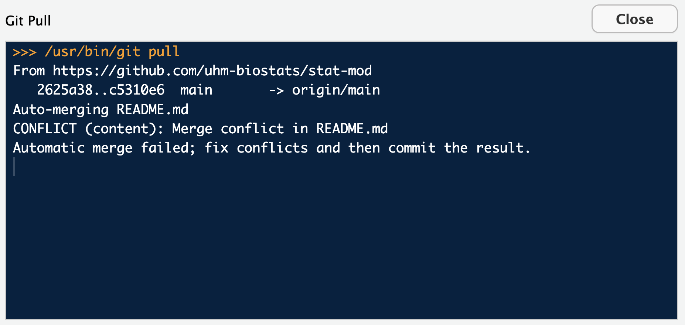
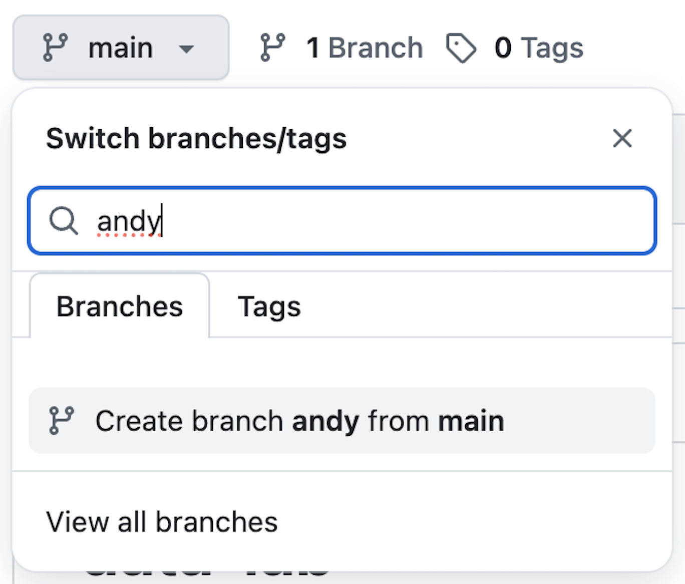
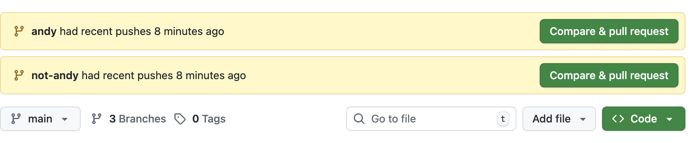
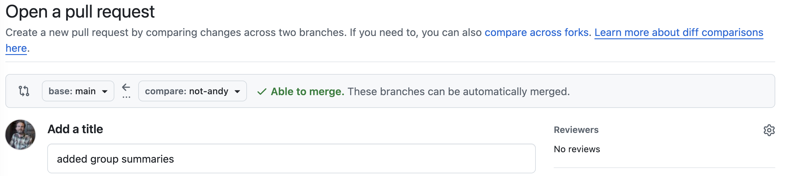

install.packages("usethis")
install.packages("gitcreds")5 Managing code with git and GitHub
5.1 What is git and GitHub and how do they help us?
Coding and analyzing data are complex tasks. We often need to try different approaches, step away from our code for a while, or share code with others to get their input and collaboration. We might often find ourselves in a situation like this: we make a script, say analysis.R, and then revise it based on feedback, but we don’t want to loose our old work, so we call the new version analysis_v2.R. Then we can’t figure out how to make a plot we want, so we email it to a friend, they edit it and send back a new file called analysis_v2_ajr-edits.R. We resolve those edits and add some other code and save the file with the date so we remember where we were: analysis_2025-01-28.R. But then we don’t get a chance to work on the analysis again for two months. By that time, we can’t remember if analysis_v2.R is the right version or analysis_v2_ajr-edits.R or analysis_2025-01-28.R. You can’t even remember exactly what the edits were and why you needed them.
Avoiding this situation is the job for git and GitHub. Git is a kind of version control software that runs locally on your computer and tracks changes to files. Those files live in a project folder (usually called a “repo” short for “repository”). GitHub is a web-based platform that hosts git repositories online, allowing you to back up your work, share it with others, and contribute to others’ projects too.
Together, git and GitHub help us in several ways. They provide a complete history of our work. Every change we make is recorded with a timestamp and a description we write about what is important in that change. If we make a mistake or want to try something experimental, we can easily revert back to an earlier version. GitHub and git facilitate collaboration. Multiple people can work on the same project simultaneously, and git helps merge their contributions together. Given the web-based hosting and backup, this is kind of like google docs for code (but a little less automated because we manually document and describe changes). GitHub makes it easy to share code, review changes, and give and receive feedback. The feedback bit is shockingly helpful via a tool called “issues” which we will discuss in the Workflow section. Hosting code on GitHub is also a real way to work toward open and reproducible science. Anyone can see exactly how we carried out our analysis.
As another important motivator: we will use git and GitHub for all class assignments moving forward.
5.2 Using git and GitHub with help from RStudio
To start working with git and GitHub we will need to make a free GitHub account and to install the actual git software on our computers. Here are external instructions for those tasks:
- make a free GitHub account; no need to follow the “Next steps” (although eventually you should set up 2FA)
- downloaded and installed git (click on your operating system here for instruction)
Instead of step (2), if you think you have done this before, check if git is already on your machine by opening the terminal (from RStudio is fine) and run this command:
git --versionYou will see a version number if git is available, you will see an error if it is not.
Now we can integrate git, GitHub, and RStudio. This is not necessary for using git and GitHub but it makes the experience easier, especially because we are already using RStudio.
We will use two R packages to help us connect RStudio and GitHub: usethis and gitcreds. Let’s install those packages by typing the following in the R console
A common problem has been that usethis has a dependency on the package crayon which is currently not playing nice. If you have errors involving crayon try this:
install.packages("crayon", type = "source")
install.packages("usethis")Now we can use functions from those packages to help us continue. First we use usethis to set up a personal access tokin that will serve as our login credential with GitHub. We do that by typing this into the R console:
library(usethis)
create_github_token()That should open up a web browser page where you might be promoted to log into your GitHub account. Do that and then on the next page scroll to the bottom and click the “Generate token” button. You will then see on a new page a string of numbers and letters—that’s the token. Copy that token and paste it somewhere temporarily, like a blank text editor document or a blank R script, where you paste it doesn’t matter—you’ll soon delete it.
Now come back to RStudio and run the following in the R console:
library(gitcreds)
gitcreds_set()This will prompt you to enter a password or token; now you can paste the token you just generated here and hit enter. You should now be good to go!
It’s possible you’ve already gone through this process. If that’s the case you’ll see this:
-> Your current credentials for 'https://github.com':
protocol: https
host : github.com
username: PersonalAccessToken
password: <-- hidden -->
-> What would you like to do?
1: Keep these credentials
2: Replace these credentials
3: See the password / token
Selection: Enter 1 for your selection. There might be be an error message but you can ignore it.
Now we should hopefully be all connected!
5.2.1 Testing our connection
Now we’ll double check that you’ve connected RStudio with GitHub by going to our GitHub profile and making a new repository. We’ll then copy (i.e. “clone”) this repo to our computers, modify it locally, and send those changes back to GitHub via git (all this sounds overly technical right now, we will gain a deeper understanding in the next section on learning the git workflow).
First let’s make a new repo. Go to your GitHub profile and click the plus sign in the top right, select “New repository”.

Give the repository a name, a description, make it public and select the option to add a README. Then hit “Create repository”

Next hit the green “Code” button and copy the HTTPS URL to your clipboard.

Now head back to RStudio and selection File > New Project. Then select “Version control” then “Git”. Finally, paste the HTTPS URL that you copied from GitHub. The “Project directory name” should auto-population. Choose a meaningful place on your computer to house this project, select the option to open in a new session and hit “Create Project”.

You should now have a new project open! Navigate to the “Git” tab in RStudio and notice that two file names are listed with yellow question marks by them.

Those files were auto-generated by RStudio. The question marks indicate that they are new files which git is currently not tracking. Click the radio button next to each one under the “Staged” column. Checking those buttons stages the files. We can now hit “Commit” to add a commit message and commit the changes. If you have success it should look something like this (possibly with a warning about username or email, that’s ok!):

Once we’ve committed the changes we can send those changes to GitHub by hitting the “push” button Hopefully the result of hitting “push” looks something like this (possibly with a warning about username or email, again, that’s ok!):

Go back to your web browser, refresh the GitHub repo page, and you should see the new files you just pushed!
While committing and pushing you might get warning messages about your username and email. If you see these warnings you need to let git and GitHub know who you are. You can do this through the Terminal. To open a terminal tab through RStudio go to Tools > Terminal > New Terminal. This will open a new terminal tab next to the R Console tab. The terminal is different than the R Console. You can think of the terminal as accessing the guts of your computer. Raw R commands will not work here. However, we can interact with git here and that’s what we need to do to identify ourselves. So in the terminal type
git config --global user.name "github_user_name"replace github_user_name with your actual username; hit enter. Then type
git config --global user.email "my_email"again replace my_email with the actual email address you used to register your GitHub account; hit enter.
Now your identity is known and you should be all set!
5.3 Learning the git and GitHub workflow
We have in fact already seen a big part of this workflow when we confirmed that RStudio is properly communicating with GitHub. Now we will work toward really understanding it.
5.3.1 Clone
Cloning means copying a remote repo, like one on GitHub, to your local computer. This is how you typically first start a local git repo. Cloning is a little more complex than just downloading all the files: cloning also maintains the relationship between your local copy and the remote repo as well as all the version history.
5.3.2 Stage and commit
Once you have your git repo locally, you will start changing files. “Staging” changes (hitting the radio button next to a file name in RStudio’s “Git” panel) let’s git know to pay attention to the changes you made. We can stage changes from one or multiple files at a time. Once staged, we can then write a commit message. This message briefly records what changes were made and (perhaps) why or how. These messages should be brief, think of them as notes to your future self (or collaborators). Recall from the intro to this chapter that git enables you to roll back to previous versions of your code (for example if you messed something up). The commit message is your way of knowing which version to roll back to. We will cover how to roll back or recover past versions soon.
These changes, and their commit messages, still only exist locally on your computer. The next steps are about interacting with the repo hosted on GitHub.
5.3.3 Push and pull
If we want our local changes to be reflected in the GitHub repo, we need to “push” them. You can push from RStudio by hitting the green up arrow in the “Git” panel. Pushing does just that, it pushes all your committed changes to the GitHub repo.
Conceptually, you should think of your local version of the repo as your temporary, personal copy of the official GitHub repo. Your computer could die, you could loose it, a cat could walk over the keys and mess it all up. Your local version is not permanent, but the GitHub version is. The fact that your local copy is ephemeral also means you should commit often, push often, and pull often.
Wait, what is pull? Pull is how you keep your local copy up-to-date with the official copy on GitHub. You can pull from RStudio by hitting the turquoise down arrow in the “Git” panel. But you might ask: how could the official copy change? Primarily through the commits and pushes of your collaborators. More on that in “Working collaboratively.”
5.3.4 Recovering past versions
To actually recover previous versions of your code, you have a few options. You can view the history of your repo (as it is preserved from within your local copy) right inside RStudio. On the “Git” panel, hit the watch icon.

A window will pop-up showing the history of all commits along with their messages.

You can click on any of those commits to see the past versions of your work. The easiest way to recover it is to copy the code of the past version and paste it into the script you’re currently working on. This gives you maximum control to selectively recover specific parts of your past work.
Another option is to use code in the terminal to roll back the entire repo to a past version. When you clicked a specific commit, you saw, amoung other information, a long SHA key. You can paste that SHA key into this code to roll back to that commit:
git revert <SHA-key>Yet another option is to use the GitHub interface to view past versions. On the page for the GitHub repo you will see another watch-looking icon.

Click that and again you can see a list of past commits which you can click through to see the associated versions of the files/scripts at the times of those commits. You can again copy-paste the code you might want from these past versions.
5.3.5 Issues: toward working collaboratively
In collaborative work (whether collaborating with other people or “your future self”) GitHub issues are a great tool for managing and organizing work. When you are working through a project by yourself or with others, you might find a need to jot down notes or to-do lists. Or you might find that code somebody else has written is not working the way it should. These are all great use cases for Issues. The idea of issues on GitHub originated with the need for users of open source software to report bugs—aka issues—to developers. But the utility of the issues feature goes far beyond bug reports.
To make a new issue select the Issues tab on any GitHub repo and then click the green “New issue” button. Many issues in the context of team coordination and task management can be expressed simply with a title, for example, “complete code for xyz task.” But you also have the ability to add detail in the “Add a description” field and, conveniently, you can format the description with markdown. So if your task “complete code for xyz” has multiple components and you want to list those out, perhaps even as a checklist, you could write in the description:
- [ ] wrangle data so samples are rows
- [ ] clean up column names
- [ ] visualize x versus yWhich will render as
You can check your markdown by clicking the “Preview” tab of the description field. You can also use markdown (or simple plain text) to comment on issues and provide further detail, notes, or to-do’s through comments.
You can also assign issues to yourself or your team mates by clicking on the gear symbol next to “Assignees.” Assigning work is an excellent way to coordinate a project.
There are a lot of further refinements you can make with issues like labels and grouping them in projects and/or milestones. You can read more about that here.
5.3.6 Working collaboratively: branches and pull requests
The most challenging part about working collaboratively—from a technical perspective—is harmonizing different versions of code and text that you and your team mates produce. This is the job of branches, forks, and pull requests. First let’s imagine a scenario:
You and a colleague are working on the same project which has one repo. You make some changes and to files locally, commit those changes and (try) to push them to GitHub. And your colleague (naturally) will do the same. But both of you will often end up with errors like this:

That means your work on your local computer is missing updated changes that are reflected on GitHub (your colleague must have pushed changes before you). No problem you might think! The error says to try pulling. But when you pull, you might see an even worse error like this:

That type of merge conflict results from multiple people modifying the same part of the same file. For example, perhaps you modify some plotting code in a script called data_viz.qmd to look like this:
# use faceting to show different groups
ggplot(dat, aes(treatment, value)) +
geom_boxplot() +
facet_wrap(vars(group))and your colleague modifies the same code to look like this:
# use color to show different groups
ggplot(dat, aes(treatment, value, fill = group)) +
geom_boxplot() Git cannot figure out how to merge your two conflicting versions.
So how do we avoid that kind of conflict?
5.3.6.1 Branches
Branches are the main approach to avoiding these kinds of conflicts. You can make a branch of a repo on GitHub, pull that new branching structure onto your local computer, switch to that new branch, and then work without conflict in your own branch. Here’s an example of all that.
Make a branch by clicking on the drop down menu called “main” (main is the current branch), typing in a new branch name, and clicking “Create branch…”

Then over in RStudio do a git pull. Once pulled, you can now switch to a different branch. Click the commit button which will open up the window where you can write commit message, but this time we aren’t committing anything, we are going to click on the “main” drop down and select the branch we want (“andy” in my case).

The files you see in your local folder may well change after you switch branches. Don’t worry–nothing is actually lost, you just have kind of switched your view of files. And in this new branch you can work without worrying about conflicting versions between you and your colleagues. There is one caveat: your colleagues will likely also be able to see your branch, so you will have to be mindful to work only in your own branch(s).
5.3.6.2 Pull requests
But what if you want your work to be integrated by your colleagues or vice versa? Then you need to bring your work and theirs back into the main branch. That is the job of the pull request.
A pull request is your way of asking your colleagues if they would like to incorporate your changes. You can do this through the GitHub web interface. In your repo you might see a notification that differences exist between branches and a prompt to start a pull request.

Or you can navigate to a summary of all branches by clicking on the branches button and you will then see three dots next to each branch name allowing you to click and create a pull request

Once in the pull request interface, you will be able to title and describe your pull request. You should also assign one or more of your team members to review the pull request

At the bottom of a pull request you—and your reviewers—can see how your work differed from the work in the main branch.

You and your reviewers might decide you need to change your code before the pull request can be merged. You can return to RStudio, make those changes, commit them, and the pull request will update with those changes. No need to make a new pull request.
Branches and pull requests are also an excellent way to collaborate with yourself. You might have an idea you want to try out, but you don’t want to break anything in your code that is currently working. Technically you can just rely on your commit history to roll back experimental changes if they don’t work. But it is a cleaner approach to use a branch and then decide if you want to pull those experimental changes in or abandon them.
5.4 Using GitHub for class assignments
Starting now, we will use GitHub for assigning and turning in class assignments. The workflow will be similar but slightly different for the two kinds of assignments we’ll have: notes and lab reports.
5.4.1 Notes assignments
You will have your own notes assignments repo created for you in our shared GitHub organization: zool631-spr-2026. Go through the steps of integrating that repo with RStudio.
Each notes assignment will be posted by the instructor (me Andy) as an issue to your notes repo. You will complete the assignment and mark the issue as resolved and including the commit that indicates you have completed the notes.
For peer review, your instructor will leave a new issue in your notes repo, assigned to you and somebody else. That somebody else will then leave you comments in the issue for you to resolve. Once you finish resolving those comments, you again mark the issue as resolved and include the commit that indicates revisions are complete.
5.4.2 Lab reports
For each lab, you will have a lab report repo created for you and a group of team members in our shared GitHub organization: zool631-spr-2026.
You will each go through the steps of integrating that repo with RStudio and then you will each create a unique branch of the repo to hold your individual work.
Each of you will complete all or most steps of the lab report (all or most depending on assignment details and group agreements). Once complete, you will submit a pull request and assign all your group members as reviewers. You will pick one group member’s code to serve as the reference for all other work. You will then review code and decide how to merge your different versions. That review process will potentially identify changes that need to be made to the reference work. After incorporating those changes, one final version will be merged into the main branch.
5.5 Resources
One of the absolute best references on git, GitHub, and working with both through RStudio is Jenny Bryan’s online book Happy git with R.